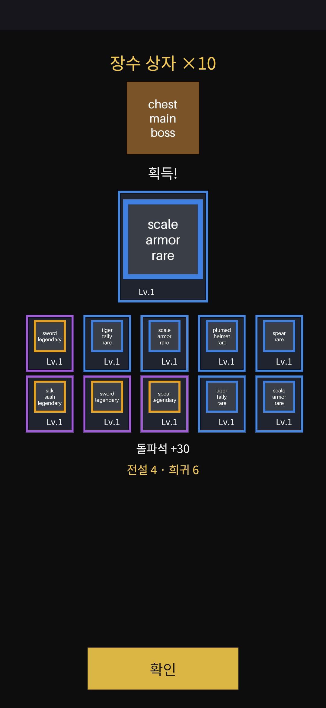
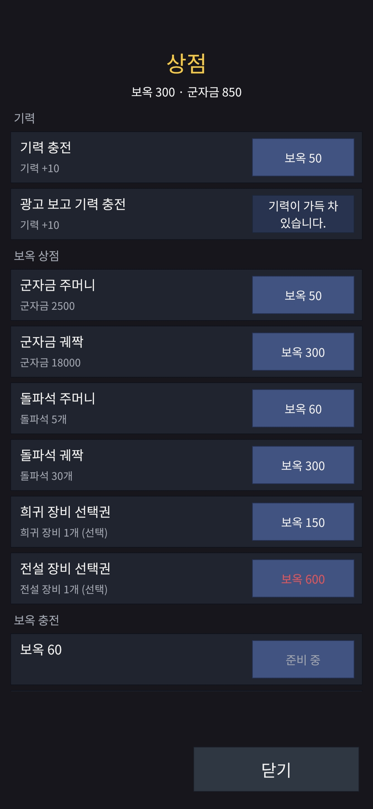

작업 목표
지난 파트에서 서버에 인벤토리 · 장비 · 상자 · 승급 · 상점 기능을 넣었다. 그러나 클라이언트는 아직 로비와 전투 화면뿐이라, 플레이어가 장비를 끼거나 상자를 열 방법이 없었다. 이번 파트의 목표는 세 가지였다. 그 기능을 쓰는 화면을 전부 붙일 것. 출시 대상인 한국과 일본, 그리고 영어권을 위해 화면 문구를 언어별로 바꿀 수 있게 할 것. 그리고 그 결과를 실기기에서 직접 확인할 것.
작업 결과
화면 다섯 종류(장비, 상자 개봉, 승급, 상점, 확률 공개)와 언어 설정, 업데이트 화면을 붙였다. 실기기 테스트 두 번에서 7가지를 찾아 5가지를 같은 세션에서 고쳤고, 2가지는 서버 변경이 필요해 다음 파트로 넘겼다.


코드에 박혀 있던 한국어 문구를 전부 텍스트 파일의 키로 옮겼다.
장비 · 상자 개봉 · 승급 · 상점 · 확률 공개, 그리고 언어 설정과 업데이트 화면.
5가지는 같은 세션에서 고쳐 다시 빌드했고, 2가지는 서버 쪽이라 다음 파트로.
계약 · 테이블 · 재배포 모두 없음. 개발 서버는 지난 파트 이미지 그대로.
문구 223개를 키로 뽑고, 설정에서 언어를 바꾼다
화면 문구가 24개 파일에 한국어로 박혀 있었다. 언어 전환을 넣으려면 먼저 이걸 전부 뽑아야 했다. 가장 큰 커밋이었지만 이걸 건너뛰면 언어 설정이 바꾸는 게 거의 없다.
문구는 데이터 테이블과 같은 파일에
스킬 설명 같은 게임 데이터 문구와 버튼 · 안내 같은 화면 문구를 언어별 CSV 한 벌에 두고, 화면 문구는 ui. 접두사로 구분했다. 번역자가 언어당 파일 하나만 보면 된다. 코드가 쓰는 키와 파일의 키가 정확히 일치하는지, 한글 문자열이 코드에 남아 있지 않은지 테스트가 지킨다.
화면에 내부 이름을 보이지 않는다
예외 이름이나 열거형 이름 대신 “(코드 20409)”처럼 숫자만 보인다. 기술 용어가 플레이어 화면에 새는 것을 막는 동시에, 문의가 오면 숫자로 원인을 찾을 수 있다.
언어는 기기 설정을 따르다가, 고르면 저장
첫 실행은 기기 언어(한국어 · 일본어 · 영어, 그 밖은 영어)를 따르고, 로비의 설정에서 명시적으로 고른 뒤에만 저장한다. 전환하면 세션과 지갑은 유지한 채 화면만 다시 그린다. 일본어 · 영어 문구 자체는 네이티브 검수와 함께 출시 준비 파트로.
성장 축 전체를 화면으로
서버 응답이 진실이고 화면은 그것을 그린다. 탭 하나가 요청 하나이고, 모든 쓰기 요청은 같은 ID로 재전송해도 한 번만 적용된다. 그래서 비행기 모드에서 강화를 누르고 네트워크가 돌아온 뒤 ‘다시 시도’를 눌러도 두 번 적용되지 않는다.
장비
Inventory슬롯 4개, 전투력순 가방 그리드, 슬롯 필터, 자동 장착. 아이템 카드에서 장착 · 해제 · 강화 +1 · 최대 강화 · 돌파를 하고, 합성은 슬롯 · 등급별로 묶어 일괄 처리한다. 비용은 탭 전에 미리 보여 주되, 실제 차감은 서버 응답을 따른다.
상자 개봉
Chests‘1개 열기’와 ‘모두 열기(최대 10개)’. 응답에 담긴 지급 목록을 순서대로 등급 프레임과 함께 공개하고, 전설 · 신화는 화면을 물들이며 신화는 가장 길게 멈춘다. 탭하면 끝으로 건너뛰어 등급별 요약을 본다. 상자 · 재료 아이콘은 스크립트로 만든 자리표시자이고, 경로와 크기를 고정해 두어 실제 아트가 오면 파일만 바꾸면 된다.
승급
Ranks40단계 트랙에 특성 5곳이 표시되고, 다음 단계의 스탯과 비용이 보인다. 특성 카드는 테이블 값으로 문장을 채운다(“전투에서 얻는 군자금 +25%”).
상점
Shop기력 충전 가격과 재화 상품 6종은 서버 가격을 쓴다. 선택권 상품은 등급 아이템 14종 중 하나를 고르는 창이 먼저 열린다. 유료 팩은 스토어 카탈로그에서 가져오고, 스토어가 아직 상품을 돌려주지 않으면 ‘준비 중’으로 두어 이번 파트에서는 어느 기기에서도 결제가 시작되지 않는다. 게스트는 구매 전에 계정 연결 안내를 본다.
확률 공개
Disclosure상자별 등급 확률(소수 한 자리)과 아이템별 확률(소수 세 자리)을 테이블에서 계산해 보여 주고, 표시값은 버림이라고 적는다. 어떤 표시값도 실제보다 높지 않다는 것을 테스트가 확인한다. 레벨업 카드의 등급 확률도 같은 화면에 있다. 법적 문구 자리는 비워 두고 출시 준비 파트에서 채운다.
‘코인 · 옥’을 ‘군자금 · 보옥’으로
화면 문구를 모으다 보니 같은 재화가 로비에서는 ‘코인’, 런과 상점에서는 ‘골드’로 불리고 있었다. 한 단어로 맞추려다 보니 삼국지 게임에 코인이나 골드가 어울리지 않는다는 것이 눈에 들어왔다.
군자금(軍資金) · 보옥(宝玉)
강화 · 승급에 쓰는 재화는 군자금, 유료 · 무료를 합산하는 프리미엄 재화는 보옥으로 정했다. 두 단어 모두 한국어와 일본어가 같은 한자라 두 시장이 한 이름을 쓴다. 영어는 서버 식별자에 맞춰 Gold와 Jade.
일본 시장에서 익숙한 표기인지 먼저 확인했다
軍資金은 일본의 삼국지 아케이드 게임에서 게임 내 재화 이름으로 그대로 쓰이고, 역사 시뮬레이션 게임의 튜토리얼에도 자연스럽게 등장하며, 일상에서도 ‘여행 軍資金’처럼 쓰는 말이었다. 宝玉은 일본 모바일 게임의 프리미엄 재화 이름으로 흔하다. 처음 후보였던 ‘金 · 玉’은 일본어로 나란히 놓였을 때 비속어와 겹쳐 뺐다.
coin, jade다.실기기에서 전부 눌러 봤다
Galaxy A16에서 전체 체크리스트를, iPhone X에서 축약판을 돌렸다. 한 단계씩 지시를 받아 사람이 기기를 만지고, 로그는 AI 에이전트가 읽었다. 1-1 스테이지를 60지점까지 클리어했고, 비행기 모드 재시도는 한 번만 적용됐고, iPhone의 메모리 경고는 0회였다(지난 파트 1회).
같은 세션에서 고친 5가지
- 기력이 가득일 때 충전 버튼이 아무 반응이 없었다 → “기력이 가득 찼습니다”로 바꿔 비활성
- 레벨업 카드 아래에 내부 효과 이름이 그대로 보였다 → 설명만 남김
- ‘용담창’이 장비인지 스킬인지 알 수 없었다 → 조자룡의 분노 스킬이라는 것을 설명과 전투 로그에서 드러냄
- 클리어 팝업이 마지막 대사를 가렸다 → 마지막 지점 뒤 버튼이 ‘승리’로 바뀌고 눌러야 팝업
- 아이템 카드에 남은 군자금이 없었다 → 보유 재화 줄 추가
다음 파트로 넘긴 2가지
- 빈 슬롯인데 새로 산 장비가 자동 장착되지 않았다 → 지급 시 빈 슬롯이거나 더 강하면 장착하는 규칙은 서버의 지급 함수에 넣어야 하므로, 다음 재배포 파트에서
- 룰렛의 스킬 1택이 등급을 섞어서 냈다 → 레벨업처럼 한 등급으로 맞추려면 런 규칙과 검증 벡터가 바뀌어 재배포가 필요
둘 다 “클라이언트만 바꾸지 않는다”는 이번 파트의 제약 때문에 미뤘다. 제약이 없었다면 재배포 세션 하나가 더 들어갔을 것이다.
처음부터 못 보는 것
- 리롤 버튼과 시작 스킬 특성: 승급 40단계 · 30단계가 필요해 새 계정으로는 닿지 않음
- 가방 300칸 가득 참, 돌파, 일괄 합성: 한 세션 안에서 재료가 모이지 않음
- 실제 결제: 스토어 상품 등록 전
그래서 다음 파트에 개발 환경 전용 ‘재화 · 상자 지급’ 디버그 버튼을 넣기로 했다. 이게 있으면 위 항목 대부분이 한 세션 안에 들어온다.
알게 된 것
앱을 덮어 설치하면 로그인도, 하던 런도 남는다
새 빌드를 설치하자 로비를 건너뛰고 바로 전투로 들어갔다. 버그가 아니라, 지난 배포 세션에 옛 빌드가 시작만 하고 읽지 못했던 런이 서버에 남아 있었고, 덮어 설치는 앱 데이터를 유지해 같은 게스트로 로그인했기 때문이었다. 로그 네 줄로 확인했고 코드는 바꾸지 않았다.
작업 시간 추산은 10배 과대였다
계획 단계에서 AI 에이전트가 낸 추산은 커밋 네 개에 15.5시간이었는데, 실제로는 70분이 걸렸다. 사람 기준의 추산이다. 반대로 빨리 끝난 것이 품질을 뜻하지는 않아서, 실제 비용은 실기기 테스트와 거기서 나온 수정에서 드러났다.
자리표시자의 규격이 곧 아트의 규격이다
상자 · 재료 아이콘을 스크립트로 만들면서 경로와 캔버스 크기를 고정했다. 실제 아트는 레이아웃이 실기기에서 확정된 뒤, 다음 파트 첫 커밋에서 코드 변경 없이 파일만 바꿔 넣는다. 아트 쪽에 전달할 조건은 같은 캔버스, 투명 배경, 등급 틴트 위에서 묻히지 않을 것.
잔액이 모자랄 때 두 화면이 다르게 행동한다
장비 화면은 버튼을 비활성으로 두고, 상점은 가격을 빨갛게 보이되 눌리게 두어 서버의 거절 문구를 보여 준다. 테스트에는 후자가 유리하고 플레이에는 전자가 조용하다. 결함은 아니지만 출시 전에 한쪽으로 맞춘다.
문서가 지시문보다 정확했다
지시문에 “매 커밋을 깨끗한 작업 트리에서 검증하라”고 썼지만, 빌드 계획 문서에는 이 파트가 완화된 정책(커밋마다 작업 트리 검사, 그룹 끝에서만 클린 검사)이라고 이미 적혀 있었다. “문서와 다르면 문서가 이긴다”는 규칙 덕에 에이전트가 먼저 짚었다.
확률 표시는 ‘실제보다 높지 않게’가 기준이다
아이템 14종을 등급 안에서 나누면 4.2857…%처럼 떨어지지 않는 값이 나온다. 버림으로 표시하고 그 사실을 화면에 적되, 표시값이 실제값을 넘지 않고 오차가 한 자리 미만이라는 테스트를 두었다.
작업 방식
계획 → 검토 → 승인 → 그룹 단위 작업과 보고 → 실기기 테스트 → 수정 → 병합. 모든 결정은 번호를 붙여 기록했고, 이번 파트에서 11개가 늘었다. 커밋 24개 중 코드가 바뀐 마지막 커밋이 검증 커밋이고, 그 뒤는 문서뿐이다.
AI 에이전트가 맡은 일
- 계획과 결정 초안, 질문 목록
- 화면 구현, 뷰 모델, 테스트, 자리표시자 생성 스크립트
- 그룹 끝마다 깨끗한 작업 트리에서 빌드 · 테스트 · 스모크 · 두 플랫폼 빌드
- 실기기 테스트의 체크리스트와 로그 판독, 수정안 제시
- PR 본문과 CI 감시, 결과 문서
사람이 직접 한 일
- 범위와 제약(서버 무변경) 결정, 재화 이름 결정
- 그룹 보고 검토와 승인, 이탈 항목 판단
- 기기 설치 · 실행 · 체크리스트 수행, 플레이 체감 판단
- push와 병합
정리 및 결론
서버를 바꾸지 않고 클라이언트만으로 할 수 있는 것은 다 했다. 그 제약 덕에 실기기에서 나온 문제의 원인이 전부 클라이언트에 있었고, 서버가 필요한 두 가지는 명확히 갈라져 다음 파트로 갔다.
이번 파트의 진행 순서
화면 문구 223개를 키로 추출 · 언어 전환
↓
테이블 불일치 → ‘앱 업데이트’ 화면
↓
장비 · 상자 · 승급 · 상점 · 확률 공개 화면
↓
재화 이름 결정(군자금 · 보옥)
↓
Galaxy A16 · iPhone X 실기기 테스트
↓
5가지 수정 · 2가지 이관 · 병합지급 시 자동 장착, 룰렛 한 등급. 둘 다 다음 재배포 파트에 묶였다.
3줄 요약
- 「조자룡이 간다!」 클라이언트에 장비 · 상자 개봉 · 승급 · 상점 · 확률 공개 화면을 붙이고, 화면 문구 223개를 키로 뽑아 한국어 · 일본어 · 영어 전환을 넣었다. 서버는 바꾸지 않았다.
- 재화 이름을 삼국지 톤의 ‘군자금 · 보옥’으로 정하면서 일본 시장에서 익숙한 표기인지 먼저 확인했고, 세 번 바뀐 이름을 커밋 하나로 접었다.
- Galaxy A16과 iPhone X 실기기 테스트에서 7가지를 찾아 5가지는 같은 세션에서 고치고 2가지는 서버가 필요해 다음 파트로 넘겼다.
다음 작업
보상형 광고와 서버 검증
Next partAdMob 계정과 광고 단위를 만들고, 광고 시청 보상을 서버가 검증해 지급한다. 같은 재배포에 지급 시 자동 장착 규칙과 개발 환경 전용 재화 · 상자 지급 버튼을 넣는다.
실제 아트 교체
Art실기기에서 확정된 아이콘 규격을 아트 쪽에 전달하고, 자리표시자를 실제 아트로 바꾸는 커밋을 코드 변경 없이 넣는다.
출시 준비
Later2 · 3장, 튜토리얼, 일본어 · 영어 문구와 네이티브 검수, 확률 공개의 법적 문구, 스토어 상품 등록과 테스트 구매, 룰렛 한 등급 규칙.